Toolbars and views in Katalon Studio
Toolbars and views in Katalon Studio
Toolbars
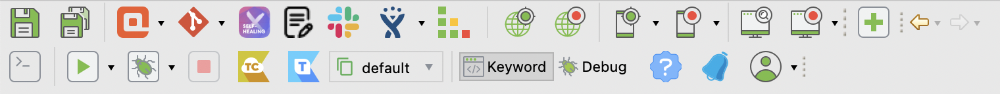The main Toolbar contains the most common actions you usually perform, for example: creating test resources or executing automated tests.
System features
| Icon | Description |
|---|---|
| Save the currently opened test artifact. | |
| Save all opened test artifacts. | |
| Open Spy Web to capture elements on websites. | |
| Open Spy Mobile to capture elements on mobile applications. | |
| Open Spy Windows Object to capture elements in Windows. | |
| Open Record Web to record WebUI test cases. | |
| Open Record Mobile to record mobile test cases. | |
| Open Record Windows Actions to record Windows test cases. | |
| Create a new test case. | |
Run the currently open test case. You can select an app to run the test from the dropdown list:
| |
Run and debug the currently open test case. You can select an app to run the test from the dropdown list:
| |
| Debug the currently open test case. See Debug a test case. | |
| Stop the current test execution session. | |
| Open Command Builder to generate commands for console execution. | |
| Execution profile (testing environments) to be applied when running tests. | |
| Access our Help Center and our Forum. | |
| 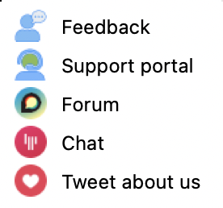 | You can also submit any feedback or further questions to our channel. Katalon experts and users will try to help you as soon as possible. |
Plugin Features
| Icon | Description |
|---|---|
Katalon TestOps is our dedicated platform for QA orchestration, test analytics, and advanced reports. | |
Katalon TestCloud is a cloud-based test execution environment where you can automate test scripts across the most common and updated browsers and/or operating systems (OS) and/or a combination of both. | |
Self-Healing automatically tries out other locators when the default locator fails. | |
Command for Git activities. You can select these options by selecting these options that appear in the dropdown list (after enabling Git):
| |
| Import test case from JIRA integrated account. |
Tests Explorer view
The Tests Explorer view allows you to browse the structure of your project and access all your test artifacts. Using the context menu on the view, you can create new artifacts, organize the view's items, or drag and drop them to certain editor views if needed.
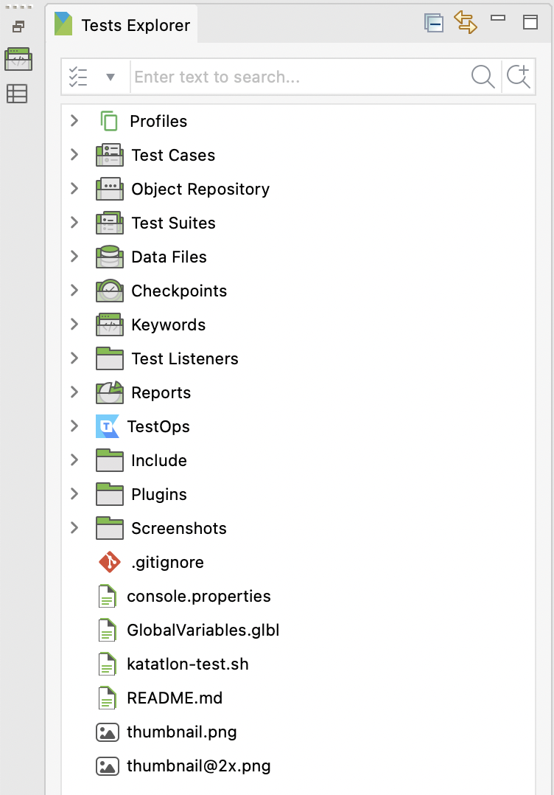
| Group | Description |
|---|---|
| Profiles | List all execution profiles of the current project |
| Test cases | List all test cases within current project |
| Object repository | List all test objects of the current project |
| Test suites | List all test suites and test suite collections of the current project |
| Data files | List all test data of the current project |
| Checkpoints | List all checkpoints of the current project |
| Keywords | List all custom keywords of the current project |
| Test listeners | List all test listeners of the current project |
| Reports | List all generated reports of the current project |
| TestOps | Contains all test runs from TestOps server |
| Include | Contains Cucumber features file and step definition |
| Plugins | Contains all plugins file of the current project |
How to customize Test Explorer in Katalon Studio?
By default, Tests Explorer displays all test artifacts. From version 7.0.0 onwards, you can customize Tests Explorer in Katalon Studio by selecting Project > Settings > Explorer. Uncheck test artifacts you want to hide, then click Apply and Close.
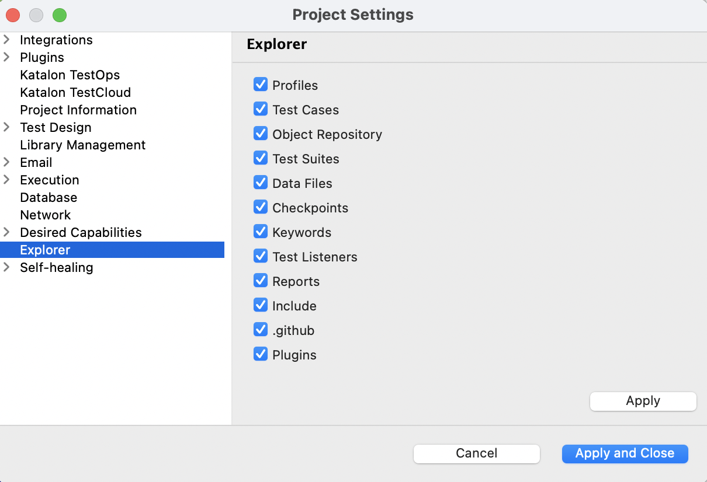
Keywords Browser View
The Keywords Browser view displays all available keywords supported by Katalon Studio, including built-in, custom, and utilities keywords. When you create a test case script, you can drag and drop the keywords in the Keywords Browser to the test case editor.
Editors
The editor is used to modify the detailed information of an object. Each test artifact has its own editor.
Test Case editor
A test case is a set of actions executed to verify a particular feature or functionality of your software application.
- Manual tab
- Script tab
- Variables tab
- Variables (Script mode) tab
-
Data binding
- Integration tab
- Properties tab
Manual tab
The manual tab displays the manual view, where the basic keyword-driven configuration allows you to create automated tests without coding. Refer to manual view for more details.
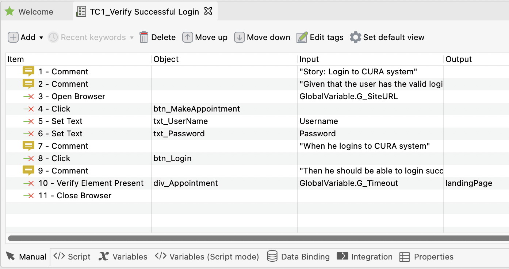
Script tab
The script tab displays the script view, where advanced users with a programming background can modify test scripts using either Groovy or Java language. Refer to script view for more details.
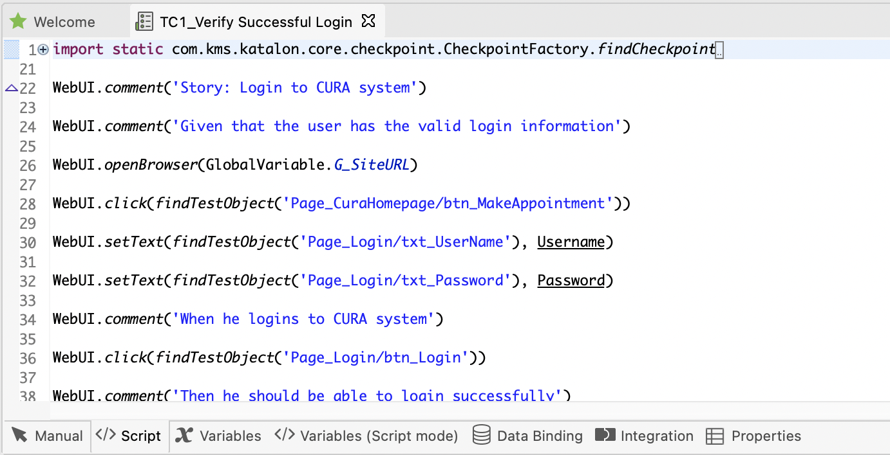
Variables tab
The variables tab shows all defined variables for that test case. Refer to public variables for more details.
Variables tab (script mode)
The Variables tab (Script mode) shows all defined Variables for that Test Case in Script mode.
Data binding
The Data binding tab allows you to conduct data binding at the test case level. You can refer to this document for further instruction: Data-driven testing at the test case level.
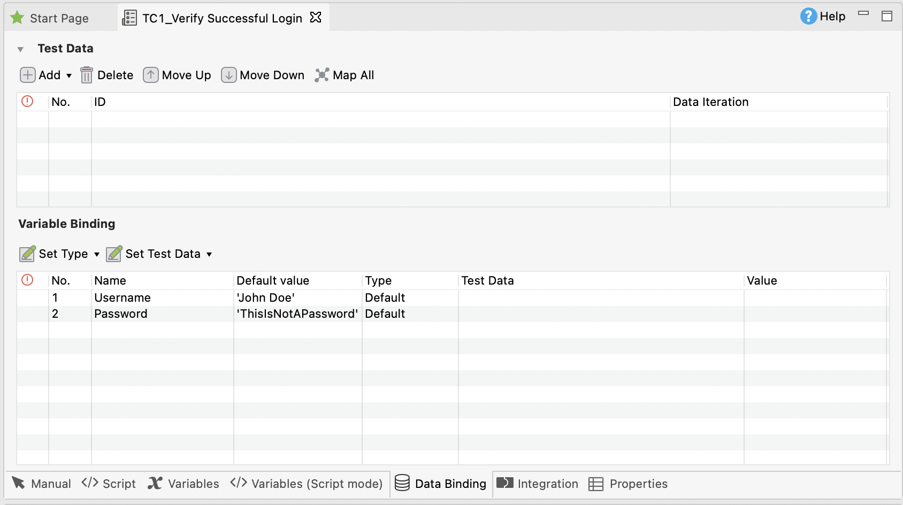
Integration tab
The Integration tab displays your configured integration in the project, for example: qTest, Jira, Azure DevOps, etc. Refer to Integrate test case for more details.
Properties tab
The Properties tab displays general information about the Test Case, including the Description and the Comment.
- Description: You can add or edit this field to provide detailed information about the test case.
- Comment: This field is read-only. The content is extracted and populated from the comment keyword in the test case. You can leverage the comment field to involve in development process of your company by providing requirements in the comment. For more information about the comment keyword, see Comment.
Test Object editor
To open a test object, go to Tests Explorer > Object Repository and select the object you want to open. The test object editor displays all detailed information of a test object, including properties and object identification mechanisms. Refer to Spy Object for more details.
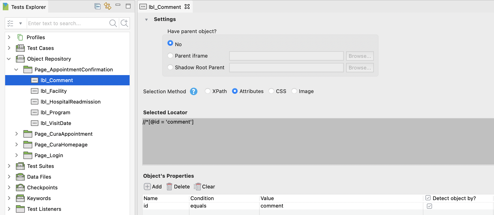
Web Service editor
To open a Web Service, go to Tests Explorer > Object Repository and select the Web Service you want to open. When you open a RESTful or SOAP request object, the Web Service editor displays detailed information of the current project, including the resource URL, request methods, and parameters. Refer to RESTful and SOAP for more details.
Web Service features
The main toolbar contains API/Web Service testing related features to help you navigate around the app easily and intuitively.
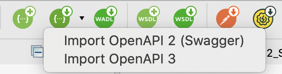
RESTful request object editor
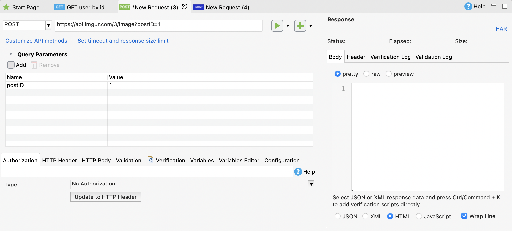
SOAP request object editor
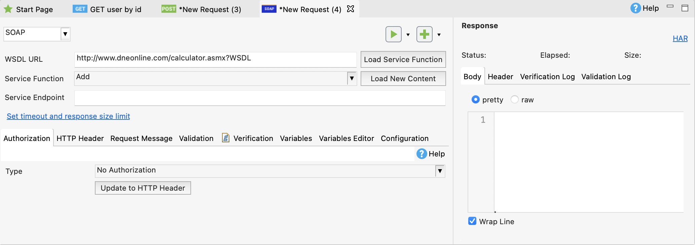
Request History panel
Request History panel displays all requests sent in Katalon Studio. You can access and retrieve them to work or save as a request object in the object repository. For more details, see Request History in Katalon Studio.
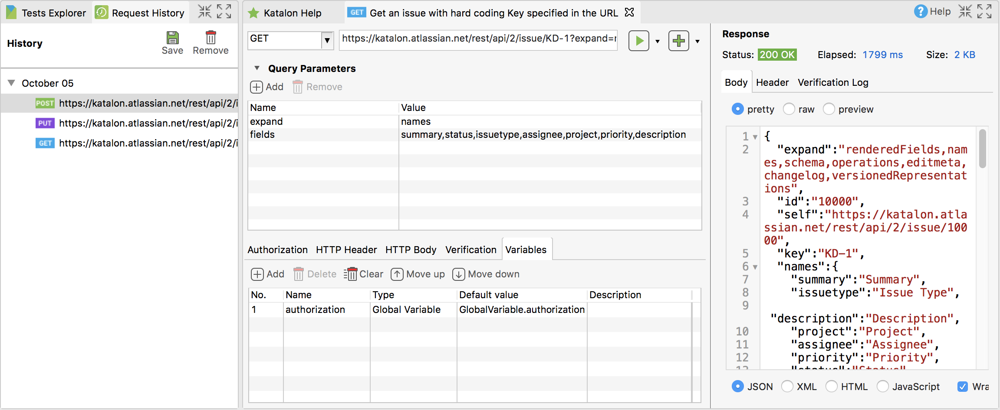
Test suite editor
A test suite (TS) is a collection of test cases.
- Main tab
- Script tab
- Integration tab
- Result tab
Main tab
The main tab displays basic information about the test suite, such as which test cases to execute, the execution mechanism, and data binding. Refer to Execute a test suite for more details.
Script tab
The script tab displays the script view, where you can set the environment, setUp, tearDown, or any configuration at the test suite level. To learn more about test suite configuration, see Test Suite.
Integration tab
The integration tab displays information regarding your test suite integration, for example, with qTest. Refer to Integrate test suite for more details.
Result tab
After you execute the test, the result tab displays the result of the latest execution, including the Passed/ Failed status of each test case, the summary report, all execution Settings, and the execution environment.
Test suite collection editor
A test suite collection (TSC) contains a list of test suites, which allows you to execute multiple test suites together in either parallel mode or sequential mode.
The test suite collection editor has two tabs: The main tab and the result tab. Refer to Test suite collection for more details.
Main tab
The main tab displays which test suites to be executed, the profile of each test suite, and the execution mode of the test suite collection.
Result tab
After you execute the test, the result tab displays the result of the latest execution, including the executed status and the Failed/ Total rate of each test suite. You can view detail results of each test suite by clicking Show details .
Data file editor
When you open a data file, the data file editor displays detailed information of the data file, including the data source and the data set preview. You can upload your data from an Excel file, a CSV file, a database query or create your own data file in Katalon Studio. Refer to Manage Test Data for more details.
Import Data File with an Excel file:
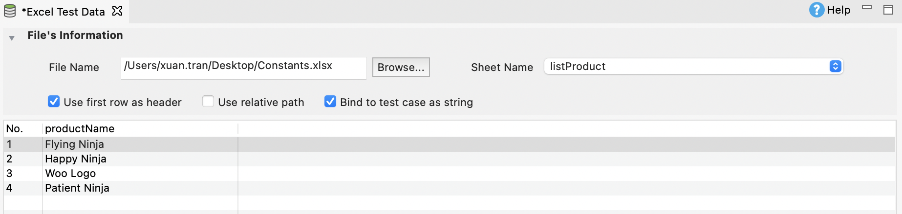
Import Data File with a CSV file:
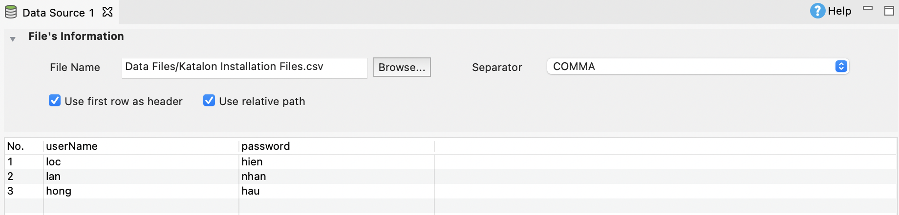
Create Data File manually using Katalon Studio:
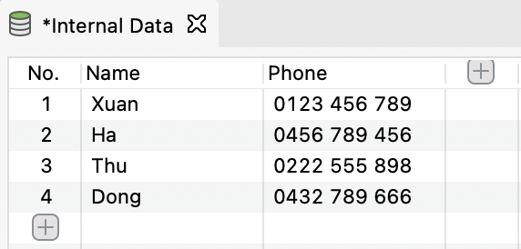
Import Data File with a Database Query:
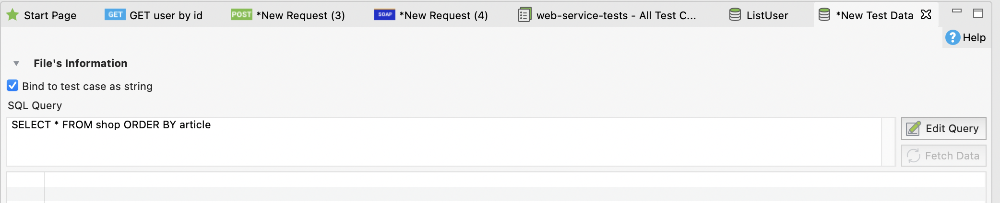
Checkpoint editor
When you open a checkpoint, the checkpoint editor displays the detailed information of the test data, including the data source and its taken snapshot. Refer to Manage Checkpoints for more details.
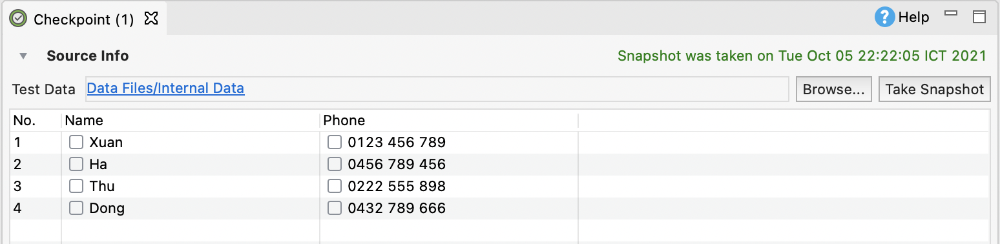
Keyword editor
When you open a custom keyword, the keyword editor displays the keyword content in script view. This scripting editor is similar to the script view of test cases, where you can define new custom keywords using Groovy or Java. Refer to Introduction to custom keywords for more details.
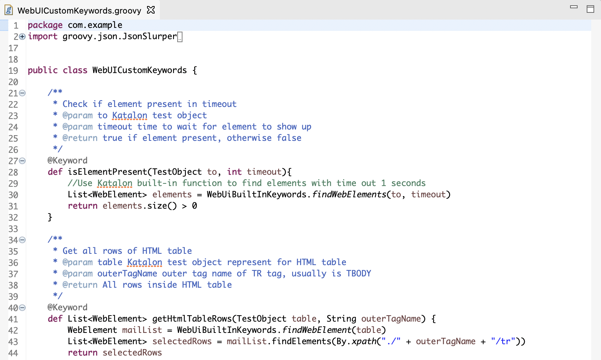
Global variables view
The global variables view allows you to browse the list of defined global variables in your project. You can either view your global variables in manual view or in script view. Refer to Global Variables for more details.
Manual view
Script view
Job progress view
The Job Progress view allows you to see the progress of executing test cases and test suites/test suite collections.
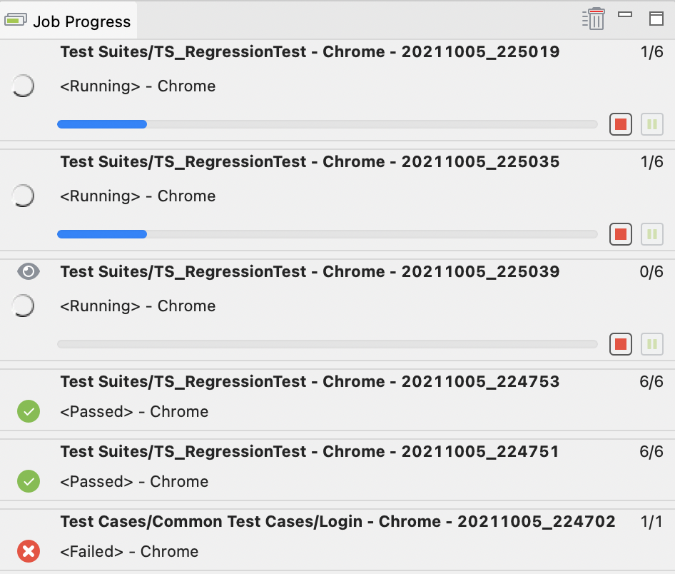
Problems view
The Problems view shows errors and warning messages raised when setting up a project or designing a test case, test suite, test object, or test data.
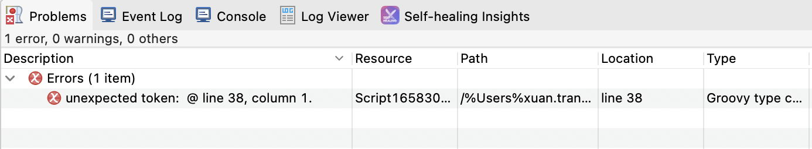
Event Log
The Event Log displays all run-time activities from all plugins and integrations enabled for your test run. Refer to Plugin for more details.
Console view
The Console view shows the system logs of all run-time activities performed while Katalon Studio executes the automated test. The console output generated from test scripts is also displayed here.
Log Viewer view
The Log Viewer shows the real-time report/log of the test execution. Refer to View Execution Log for more details.
Click on the expand button to see more information in the Log Viewer.
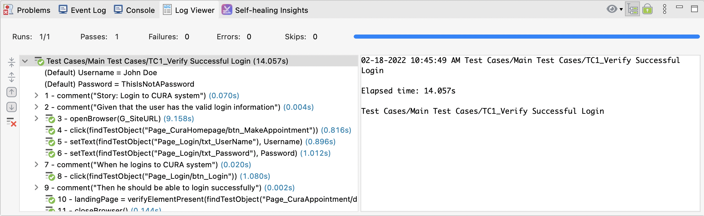
Report view
The report view allows you to view detailed information of completed test execution for a certain test suite.
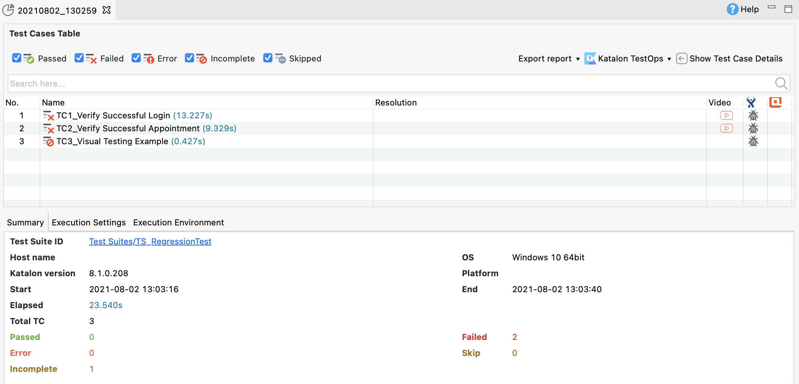
You can use the search bar to find the desired information in your report.
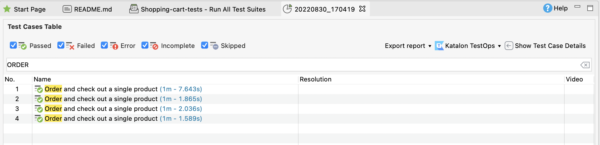
Test suite collection report view
The test suite collection report view allows you to view detailed information of completed test execution for a certain test suite collection. Refer to Test Suite Collection Report for more details.
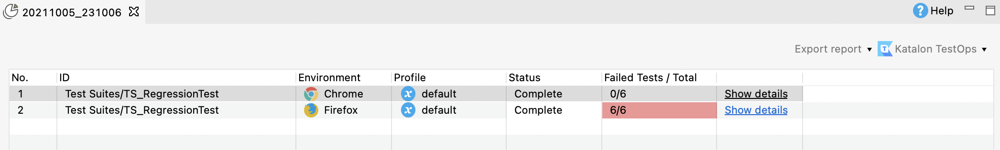